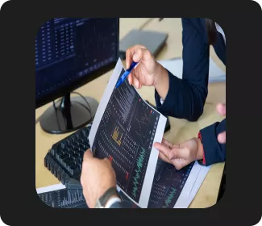
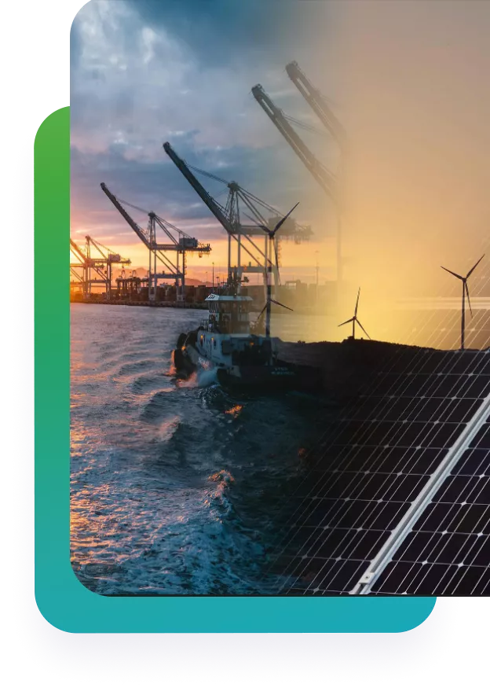
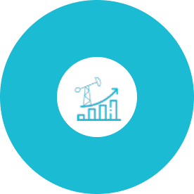

Copyright © Inerg 2022
Privacy Policy
inerG, Inc.
4202 Directors Row Ste 110,
Houston, TX 77092. +1-713-913-5001 Tearms & Conditions About Us Contact Us Platform Solutions How it works Careers Capabilities Support Get in touch
Energy FinTech Platform Empower Data Driven Energy Investments & Management Digital energy and financial tech platform with energy data cloud for our energy asset management applications, customer/partner extensions and to support our customer’s digital transformation journey for a carbon neutral future.
Energy Assets Economic Performance Monitoring Made Easy. inerG platform helps manage energy assets with confidence on achieving optimal returns through timely insights on production yields, costs, market price sensitivities and risks.

4202 Directors Row Ste 110,
Houston, TX 77092. +1-713-913-5001 Tearms & Conditions About Us Contact Us Platform Solutions How it works Careers Capabilities Support Get in touch
Send message
Your Name
Your email
Write your message
Decisions With Confidence
Information is shared organization-wide the moment it is loaded.
Through remote connections, field personnel have access to all
information, further strengthening the decision process.....
Read more

Pays For Itself
Oil & Gas operators are constantly faced with problems and
not enough time to address them. Even though the playing field
is always shifting, the fundamental goal has remained the same -
optimize operations by reducing costs and improving recovery.
Read more
Optimizing economic performance of energy asset portfolios
inerG makes the process of evaluating, funding, monitoring and
optimizing energy asset portfolios simpler, faster, safer and
cost effective.
New Way Of Asset Performance Optimization
Energy FinTech Platform Empower Data Driven Energy Investments & Management Digital energy and financial tech platform with energy data cloud for our energy asset management applications, customer/partner extensions and to support our customer’s digital transformation journey for a carbon neutral future.
Sustainable World
Energy For All We aspire to make our customers top performers in the industry and help make energy sustainable and affordable for all.
Energy For All We aspire to make our customers top performers in the industry and help make energy sustainable and affordable for all.
Energy Assets Economic Performance Monitoring Made Easy. inerG platform helps manage energy assets with confidence on achieving optimal returns through timely insights on production yields, costs, market price sensitivities and risks.
Oil & Gas Investments
Diligence Simplified. Our cloud-based digital tools help you evaluate Oil & Gas assets for acquisition and divestiture (A&D) enabling a cost effective and efficient economic evaluation and land due diligence internally or with the help of our professional diligence team facilitating a smooth transition and integration of assets.
Diligence Simplified. Our cloud-based digital tools help you evaluate Oil & Gas assets for acquisition and divestiture (A&D) enabling a cost effective and efficient economic evaluation and land due diligence internally or with the help of our professional diligence team facilitating a smooth transition and integration of assets.
How it works
Solutions
Capabilities
Platform
About us
Maximizing Energy Asset Performance
Tools to simplify asset valuation & diligence, maximize
economic performance and minimize investment risk.
Schedule a meet
Learn more

inerG
pulse
Real-time insights into risks and economic performance of your
assets
Asset Performance & Risk Monitoring
Learn more
Reserve Forecasting, Valuations & Reporting
inerG
economics
Improves the accuracy and efficiency of acquiring and
integrating most viable assets
Learn more
